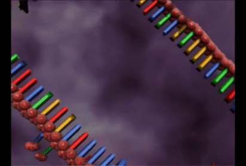
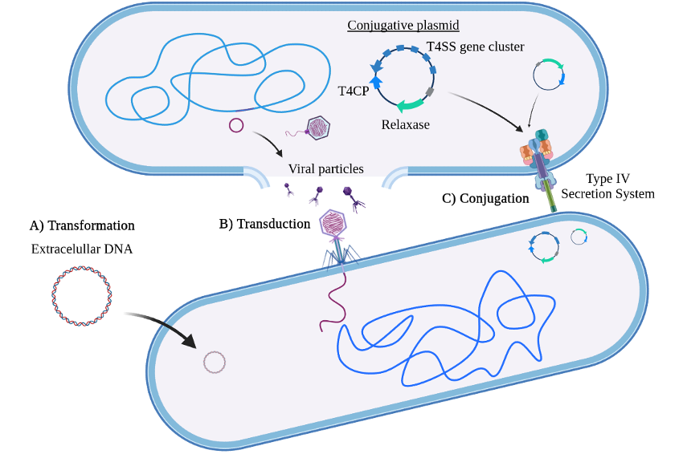

Mobile Genetic Elements
Mobile genetic elements
This brief section belongs to the Introduction of the Master’s Thesis from one of our students, Víctor Mateo-Cáceres (UAM, June 2022).

Over the course of evolution, genetic material has found diverse ways of mobilization beyond vertical inheritance. A whole spectrum of vehicles, ranging from plasmids to phages, is used by all bacterial species for the horizontal transference of DNA between cells (Frost et al. 2005; Partridge et al. 2018). These wandering DNA sequences, referred to as Mobile Genetic Elements (MGE), can encode virulence determinants, antimicrobial resistance (AMR) genes, phage defense systems, and other factors that grant their hosts new phenotypic traits. MGE transference is especially relevant in prokaryotes, where specific DNA mobilization systems have been developed to enhance and optimize the acquisition of these elements (Frost et al. 2005). In fact, obtaining advantageous features through MGE transference is the main form of short-term adaptation in bacteria and can become crucial for cell survival, as in the case of AMR genes. The concerning increase of multidrug-resistant (MDR) bacteria is a clear example of this last point (Magiorakos et al. 2012). Therefore, it is essential to discover and characterize new mechanisms of genetic transference in order to disclose which features allow certain bacterial strains to succeed over the rest, especially the pathogenic ones.
Horizontal genetic exchange mechanisms can be classified into three main groups according to the DNA introduction pathway: transformation, transduction, and conjugation (Figure 1). Transformation is the direct uptake of genetic material from the extracellular medium, which is frequently inefficient and can require activating the competence state (Carvalho et al. 2020; Firth et al. 2018). Transduction refers to the transport of foreign DNA by viral particles (Humphrey et al. 2021). Conjugation, which has been extensively studied in plasmids, involves the transference of DNA from a donor cell to a recipient cell through the Type IV Secretion System (T4SS) (Smillie et al. 2010).

Conjugative plasmids typically carry all genes necessary for T4SS configuration plus a T4SS coupling protein (T4CP), which is involved in the T4SS-DNA interaction, and a relaxase, which is a nickase necessary for generating the single-stranded DNA (ssDNA) that will be transferred. In fact, relaxases can be divided into several families according to their sequence and have been proposed as markers for plasmid classification (Smillie et al. 2010; Garcillan-Barcia, Francia, and Cruz 2009). Nevertheless, we currently know conjugative plasmids that lack some of the conjugation modules and conjugative plasmids with the capacity of integrating into the genome, also called Integrative and Conjugative Elements (ICEs) (Botelho and Schulenburg 2021), remarking the high flexibility of this type of MGEs.
Self-replicative MGEs… or not?
We are particularly interested in elements encoding enzymes related to DNA replication and repair. Thus, the discovery, some time ago, of a group of MGEs called Polintons (Kapitonov and Jurka 2006), as they encode their own B-family DNA polymerase. Later, another MGEs group also resulted to contain a PolB, the Casposons (Krupovic et al. 2014). This led some authors to define a group of elements that might be self-replicative elements (Krupovic and Koonin 2016). However, the role of those PolBs is still unknown.
Pipolins, our model MGE
Apart from phages, plasmids, ICEs, and other MGEs that have been in the spotlight for the last years, such as integrons or CRISPR-Cas Associated Transposons (CASTs), one group recently discovered stands out for its large genetic diversity and variability: pipolins. This new superfamily of MGEs comprises elements found in the three major bacterial phyla and even mitochondria (Redrejo-Rodríguez et al. 2017). The only gene shared by all pipolins encodes for a replicative DNA polymerase from the family B (PolB), granting these elements the category of the so-called “self-replicating” elements along with the abovementioned Polintons and Casposons. However, PolBs from pipolins do not need a DNA/RNA 3’-end or a protein as a primer to initiate the complementary strand synthesis, making pipolins a unique class of elements inside the MGE universe. Furthermore, the biochemical characterization of this polymerase named piPolB (from primer-independent) has shown that it has capacity of proofreading, strand displacement, and replication over both undamaged and damaged templates. All of these features plus the de-novo DNA synthesis suggest a possible role for the piPolB in pipolin replication and/or cell DNA damage tolerance. However, we could generate a E. coli strain harboring pipolin but lacking the piPolB, which indicates that piPolB is not essential for pipolin maintenance. This result raised questions about the biological role of piPolB, but also about the “self-replicating” GME. Are they replicating at all?
Later on, we could characterize the pipolins in pathogenic E. coli strains, showing that they are highly flexible and diverse, with the piPolB and the integration site being the only features in common to all elements (Flament-Simon et al. 2020). We described this work also in this post in Nature Microbiology Community site.

E. coli pipolins appear as integrated elements next to a specific tRNA gene, delimited by two direct repetitions (DRs) similar to phage atts, and encode for several distinct functions other than the piPolB. Among these different functions, we often find: tyrosine-recombinases (Y-rec), probably responsible for the excision and integration of the element; restriction-modification (RM) enzymes, known as defense systems against foreign DNA; and many other genes related to DNA mobilization and metabolism (integrases, Uracil-DNA glycosylases, excisionases). Surprisingly, no antimicrobial resistance gene was found in any pipolin except very few cases.
ExplorePipolin
The recent accessibility of high-throughput sequencing methods as part of surveillance programs of bacterial pathogens allows the genomic and metagenomic monitoring of the expansion of bacterial strain-specific markers, including virulence and AMR genes. However, these fast-evolving methods also generated a burden of data that must be throughout processed and analyzed (Mitchell and Simner 2019). This is particularly problematic regarding the study of dynamics and plasticity of MGEs, as they can range in size from very simple and small elements, such as insertion elements (IS), coding for only the transposase necessary for their relocation, to large prophages, transposons and plasmids, which can be tens or hundreds of kilobase pairs in length and also appear associated among themselves (Partridge et al. 2018; Durrant et al. 2020; Benler et al. 2021). Further, MGEs prediction and analysis are hindered by their great modularity and rapid evolution through gene acquisition and gene loss. Many pipelines designed for the analysis of MGEs are specialized and rely on the identification of hallmark genes, like plasmid replication proteins (Carattoli and Hasman 2020), relaxases (Alvarado, Garcillán-Barcia, and Cruz 2012) or specific transposase or recombinases for integrative elements (Ross et al. 2021; Siguier et al. 2012; Moura et al. 2009; Cury, Touchon, and Rocha 2017; Cury et al. 2016). Some works have focused on the use of selected, high-quality reference genomes, but at the cost of diversity loss (Jiang et al. 2019).
In order to facilitate the characterization of pipolins, we developed ExplorePipolin, a Python-based pipeline that screens for the presence of the element and performs its reconstruction and annotation. The pipeline can be used on virtually any genome from diverse organisms and of diverse quality, obtaining the highest-scored possible structure and reconstructed out of different contigs if necessary. Then, predicted pipolin boundaries and pipolin encoded genes are subsequently annotated using a custom database, returning the standard file formats suitable for comparative genomics of this mobile element.
Recent work from the lab
Prevalence and genomic characterization of pipolins and other mobile genetic elements
We conducted a comprehensive screening of pipolins in all available bacterial genomes in the Genbank database using ExplorePipolin, a custom pipeline previously developed in our lab to identify and reconstruct pipolins from draft genomes. The analysis indicated that pipolins are integrative elements commonly flanked by direct repeats in Gammaproteobacteria genomes, often occupying integration hotspots of known mobile elements. Integrase dynamics correspond with alternative integration sites, enabling diverse lifestyles ranging from integrative to mobilizable and plasmid pipolins, as observed in genera such as Limosilactobacillus, Pseudosulfitobacter, and Staphylococcus. Detailed examination of identified pipolins revealed their role in maintaining antiviral defense systems through frequent exchanges with other MGEs. Consequently, pipolins serve as reservoirs of adaptive traits primarily related to defense functions. Pipolins exhibit a bimodular structure with various cargo genes and a minimal set of core genes, with a primer-independent DNA polymerase (piPolB) being the only universal hallmark. We propose that these MGEs, along with potentially overlooked elements, form a novel superfamily within the bacterial mobilome, providing dynamic platforms for exchanging defense systems. These antiviral genes may be incorporated by ciMGEs, plasmids, and other gene transfer machinery-bearing elements, which benefit from the defense gene reservoir provided by pipolins and other mobile genetic elements.
In collaboration with the lab of Prof. Nicolás Toro, we also performed a systematic analysis of UG and Abi RTs, increasing the number of UG/Abi members up to 42 highly diverse groups, most of which are predicted to be functionally associated with other gene(s) or domain(s). Based on this information, we classified these systems into three major classes. In addition, we reveal that most of these groups are associated with defense functions and/or mobile genetic elements, and demonstrate the antiphage role of four novel groups. Besides, we highlight the presence of one of these systems in novel families of human gut viruses infecting members of the Bacteroidetes and Firmicutes phyla. This work lays the foundation for a comprehensive and unified understanding of these highly diverse RTs with enormous biotechnological potential.
More recently, in collaboration with Dr. Miguel de Vega’s laboratory (CBMSO), we examined the prevalence of the Escherichia coli insertion sequence-excision enhancer in enterohemorrhagic strains (Calvo et al. 2023). Although IEE had been identified in the most pathogenic serotypes of E. coli, its biochemical features that might explain its role in IS excision remain unclear. Our findings indicate that IEE is present in over one third of all available E. coli genome assemblies and is highly conserved and abundant within enterohemorrhagic, enteropathogenic, and enterotoxigenic genomes.
The Genetic Plasticity and Repertoire of Pipolins Suggest Their Role in the Maintenance and Diversification of Bacterial Defense Systems
The detailed analysis of bacterial pipolins revealed a key role of pipolins in the maintenance of the arsenal of antiviral defense systems by frequent exchange with other MGEs. Thus, pipolins serve as an orthogonal reservoir of adaptive traits, primarily related to defense functions. Pipolins are characterized by a bimodular structure, with a wide array of cargo defense genes and a minimalist set of core genes, with a primer-independent DNA polymerase (piPolB) being the only universal hallmark. Moreover, analysis of the weighted gene repertoire relatedness (wGRR) revealed that many of these defense factors are actively exchanged with other mobile elements, mainly plasmids (Mateo-Cáceres & Redrejo-Rodríguez, 2024).
Overall, our findings suggest that pipolins act as bimodular defense units with a minimalist genetic core and a dynamic module for building a variable defensive arsenal. Pipolins, along with similar integrative defense elements, maintain a reservoir of defense factors and a reduced set of core genes. These MGEs likely represent a new superfamily dedicated to hosting a dynamic catalog of defense systems. This dynamic reservoir is eventually incorporated by other MGEs, plasmids, and elements with gene transfer capabilities, benefiting from an orthogonal supply of defense genes. A detailed analysis of gene exchange rates in MGEs may further elucidate the dynamics of defense systems among these elements.